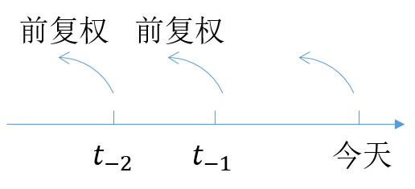

股票的除权和复权
Posted on 2016-12-19 in Quant
——我们不怕数字游戏，只不过是简单的数学。
送股、转股、配股（增发）、分红、派息……总有一款让新韭菜头晕，其实这些都是数字游戏，只是通过分现金或变动股数来调整股价，总市值保持不变。那公司为什么要这么做呢？考虑增股或分红需要缴税，小股东还要亏损一点，但大股东总有某种原因，例如市值管理，市场有炒作低价股的倾向！除权（Exclude Right, XR)是发行公司按一定比例分配股票股利给股东，增加公司总股数；除息（Exclude Dividen, XD）是分配现金股利给股东，两者都会降低每股权益，且有时候统称为权息，或者就是除权。
举例：某公司决定10股送1股，即送股率0.1，如果你手中有10股，送完后则有11股。假设该公司总共有20股，除权前每股5元，那价格如何调整呢？设除权后价格为X，根据市值不变原则，可得：5*20 = X*20*(1+0.1)，即X=5/(1+0.1)。第二天就在这个价格基础上进行集合竞价。
由市值不变原则，除权除息的计算公式也很简单：
除权参考价 = (股权登记日收盘价 + 配(新)股价 * 流通股变动比率 - 现金红利) / (1 + 流通股变动比率)
注：分红转增的股份变动比例直接用送股比例、配股比例和派息比例即可，而配股时因为有股东会放弃配股， 所以直接用配股比例算不准确，需要按照配股前后股本的变动比例来计算。
除权除息会造成股票价格、技术指标突变，但却是真实价格。复权是我们为了研究方便模拟出来的逆过程，用于分析当前价位在历史价格中的相对位置。前复权是以当前价格为基准，缩减历史价格，将去除权息前的K线向下平移拼接而成，比较常用。后复权是以某个历史时点为基准，调整此后的价格，此时当前价格也被动变化，不利于和实盘对照。
量化回测中的复权
前复权是站在未来看过去，实际上对于基于价格的策略来说，引入了未来函数。一个解决方法是回测中每一天只使用该天之前的前复权数据，这种方法有时候被称为“动态复权价格”；另一个选择是使用后复权价格。当然，如果价格因子也需要考虑，则必须使用真实价格，否则会得到错误的结果，例如，买入低价股策略。

前复权的另一个问题是计算的累计误差，由于股价通常采用两位小数，前复权会导致价格基数越来越小，即便采用百分比收益率，累计计算误差越来越大，而后复权则好得多。无论是简单前复权，还是动态前复权，时间跨度可能在3~5年为宜。
第三个缺点是当股票存在分配或配股时，前复权不能正确计算收益率，有时候我们发现股票在很久之前的价格是负的，例如万科A。更可靠地是下文所述的复权涨跌幅复权。
本地化存储
各类平台中的交易数据一般有不复权、前复权（当前价格基准）和后复权（上市价格基准）三种选择，更合理的方案是获取不复权数据和复权因子，然后在有需要的时候自行计算复权价格。
单次复权因子 = 登记日收盘价 / 除权参考价
累计复权因子（即每个交易日的复权因子）为此前所有单次复权因子的连乘积。
向后复权价 = 股票真实价格 * 每个交易日的复权因子
复权涨幅 = 复权价 / 前一日复权价 - 1
我们得到复权涨跌幅后，可以很容易通过连乘得到后复权价格（或者直接用累计复权因子），通过连除得到前复权价格。需要注意的是，如果不参与分配，或者分红进行重复投资，且不参与配股，此时得到的收益率也是真实收益率。
至此，我们统一了计算口径，通过累计复权因子得到后复权价格进而计算涨跌幅，也能在回测时得到较真实的收益率。